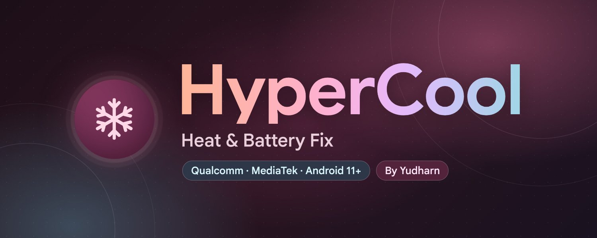

Reading device info…
–Temp
–Idle drain
–Health
Reading screen-off battery use…
Couldn't read the settings.
Preview only. Open this page from the KernelSU manager to change settings.
Battery check
Health, cycle count, capacity and live kernel readings
Top battery use
Apps, system apps and hardware since the last charge
Battery calibration
One full cycle so the gauge learns the real capacity. Every 1–3 months is enough
Not started.
- Use the phone until the battery is at 5%
- Charge to 100% without unplugging
- Keep it plugged in until charging finishes (at most 1 h)
Quick presets
Loads a set of values. Press Save to keep them.
App cache
Last clean, automatic or manual. Only cache is removed, app data stays.
Not cleaned yet
last cleared
| From | – |
| Time | – |
| Next auto clean | – |
Optimize apps (dex2oat)
Compiles apps in the background for faster starts and less CPU.
Runs once in the background, nothing changes at boot. A weekly automatic run is under Storage settings.
Mode
Apps at the same time
Apps
No apps chosen
Force recompile
Not run yet.
One-shot actions
Runs once right now. Nothing is saved, scheduled or kept running.
Clean RAM now
Stops background apps when the phone feels slow.
It doesn't save battery, apps that restart later use more. Safe: cached apps only. Aggressive: other user apps too. Extreme: everything except core system and push.
Clean junk files now
Deletes crash dumps, ANR traces, old logs and thumbnails, then runs fstrim
Appearance
Dark theme
On (Standard)
Colors
System (Dynamic)
Blur toolbar
Frosted glass effect on the header and the bottom bar
Configuration
Backups are saved to Download/HyperCool and include your charger calibration.
Backup settings
Save the current options to a file you can keep or share
Restore settings
Load a backup, review it, then press Save
Import settings
Pick a backup file from anywhere, or paste its text
Reset to recommended settings
Load default values (your app lists are kept)
Maintenance
View boot log
What was applied, skipped or rejected on the last boot
Create bug report
Saves device info, last boot result, settings and the boot log to Download/HyperCool, to send when you report a problem
Revert system changes now
Puts everything back now and turns the ROM options off
Restart
Restart to apply your saved options
Support
Donations help keep updates coming.
SociaBuzz
One-time tip in Indonesian rupiah
Ko-fi
One-time tip with PayPal
QRIS
Scan with any Indonesian e-wallet or bank app
About

HyperCoolMade by Yudharn
HyperCool works on Qualcomm and MediaTek phones, on any ROM. It lowers heat and standby drain, and favors battery life over peak speed.
Runs once at boot. Features your phone doesn't support are skipped.
License: GNU GPL v3.0 or later
Font: Google Sans (SIL Open Font License)
Telegram channel
@ModuleArchives: updates, changelogs and support